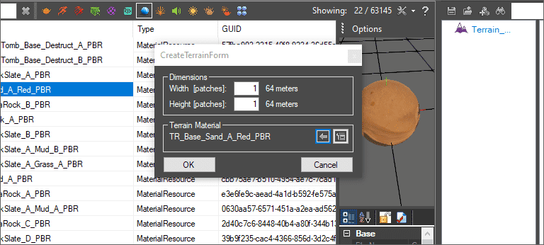
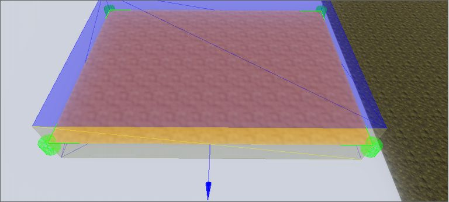
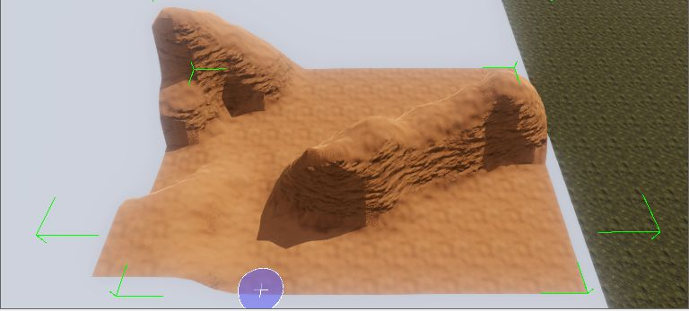
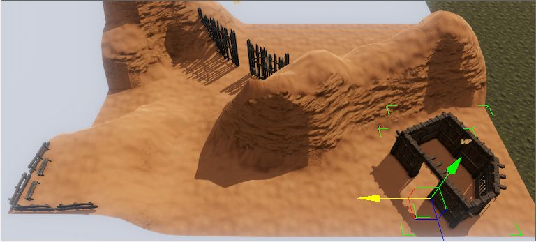
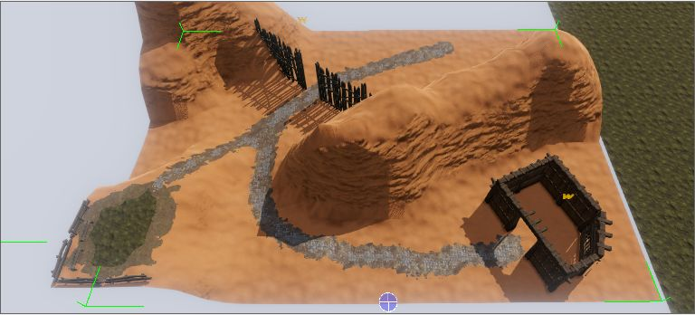
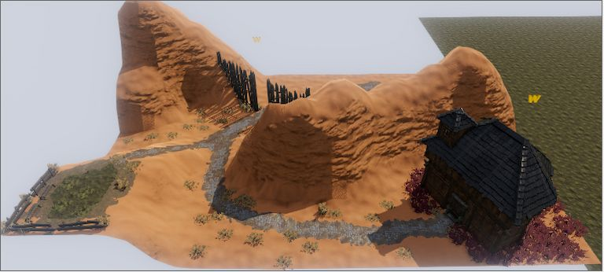
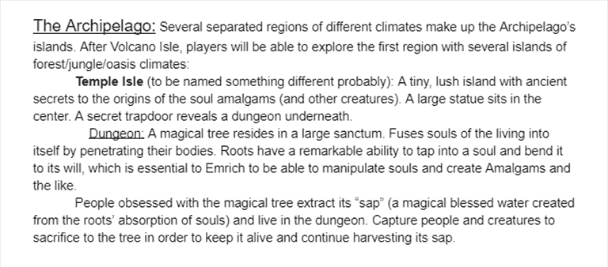

Mapping Process
Mapping is pretty simple in the Divinity Engine once you get the hang of things. The process more or less goes like this:
Step 1: Create the terrain and set its material
Step 2: Resize the terrain
Step 3: Shape the terrain and give it volume (like hills, valleys, etc.) with brush tools
Step 4: Place landmarks to tell where main structures or rooms etc. will be
Step 5: Add additional materials to the terrain and paint complex texture combinations (roads, dirt paths, etc.)
Step 6: Add everything else like fancy extras such as vegetation, finished buildings, etc.
Of course, this process will vary heavily depending on your preference or what you’re mapping for. For example, if you’re making a full-fledged adventure, you might plan more before mapping so you have an idea for how the map will progress your story and where things will happen.
How Should I Go About Mapping?
You essentially want to be starting the mapping process after you have planned your mod out. You don't want to spend forever on a map only to later discover you need to change it.
Keep in mind, by "planning" I don't necessarily mean writing a whole story. Planning for you could mean deciding you want to figure the story out as you make a map (I once made a small island with a single house on it, then decided it would be perfect as a hub for the player), or making a sketch of something from your mind, or just coming up with a general idea for what you want to make (like a mansion created by an evil scientist) so you can stick to it.